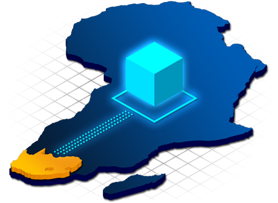
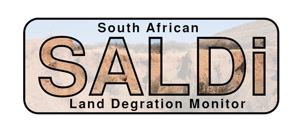

Finished Project
South African Data Cube
About the Project
Development of EO Data Cubes for Monitoring Land Degradation Processes in South Africa

Global biodiversity and ecosystem services are under high pressure of human impact. Although avoiding, reducing and reversing the impacts of human activities on ecosystems should be an urgent priority, the loss of biodiversity continues. One of the main drivers of biodiversity loss is land use change and land degradation. In South Africa land degradation has a long history and is of great concern.
Within the SALDi (South African Land Degradation Monitor) project ready-to-use earth observation (EO) data cubes are developed for land degeneration monitoring. EO data cubes are both useful and effective tools to deliver decision-ready products for users. By accessing, storing and processing of EO products and their time-series in data cubes, the efficient monitoring of land degradation can therefore be enabled. The SALDi data cubes from optical and radar satellite data include all necessary pre-processing steps and are generated to monitor vegetation dynamics of five years for six focus areas.
Therefore, spatial high resolution earth observation data from 2016 to 2021 from Sentinel-1 (C-Band radar) and Sentinel-2 (multispectral) will be integrated in the SALDi data cube for six research areas of roughly 100 x 100 km. Additionally, a digital elevation model and a number of vegetation indices will be implemented to account for explicit land degradation and vegetation monitoring.
Stakeholders

SALDi – South African Land Degradation Monitor
SALDi is funded by the German Federal Ministry of Education and Research (BMBF) and conducted in cooperation between the University of Würzburg and South African research partners. The project develops operational EO-based monitoring tools for land degradation assessment across six focus regions in South Africa, supporting national environmental reporting and evidence-based land management decisions.
Facts & Figures
Available Datasets
- Almost 7,000 Sentinel-1 SAR images (2015–2020)
- Roughly 6,000 Sentinel-2 images (2016–2018)
- 8 TeraBytes of ingested data; 4 TB additional expected
- Copernicus Digital Surface Model and vegetation products
- Jupyter Notebooks for data access and analysis